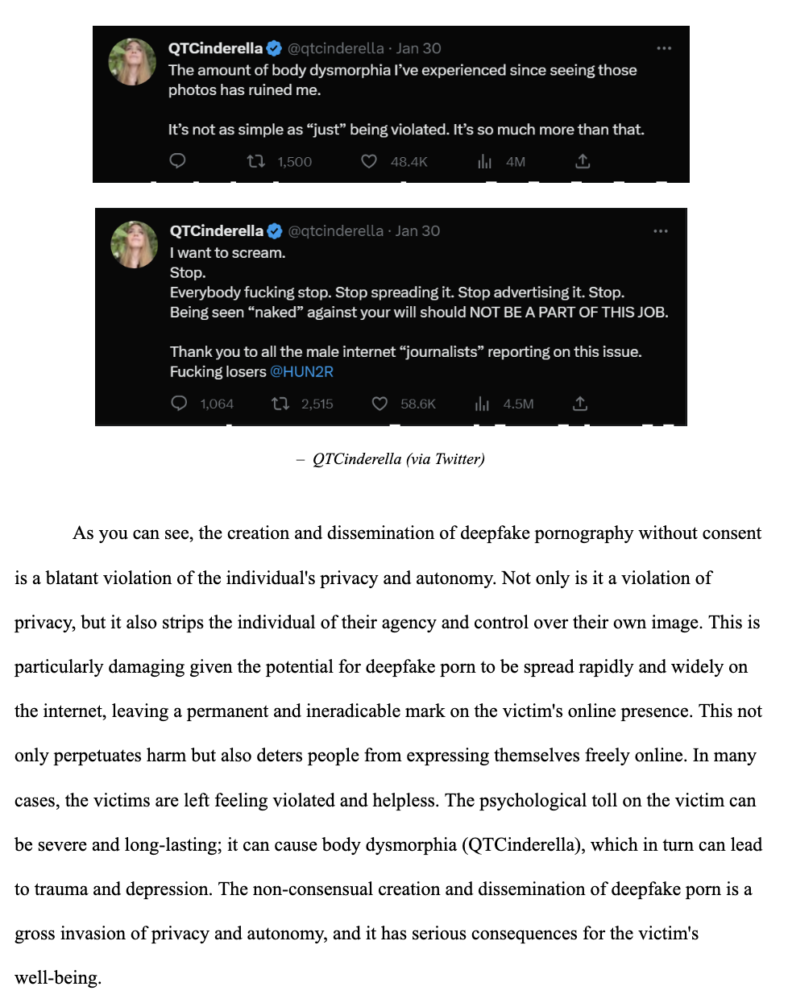
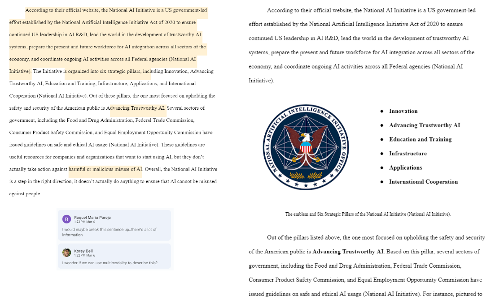
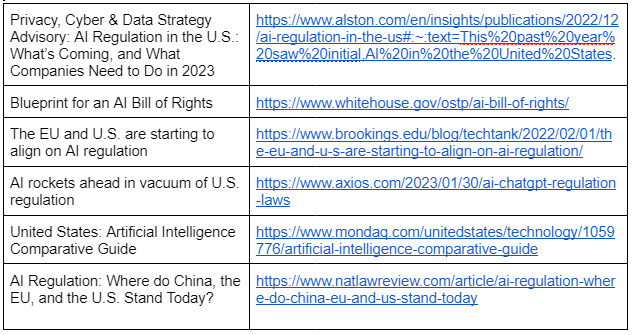

REFLECTIVE INTRODUCTION
Writing has never really been my strong suit. For as long as I can remember, I've always preferred subjects heavier in problem-solving and pattern recognition, like math and the sciences. Naturally, I was a bit nervous about taking my first college writing class. However, looking back at the quarter, I can say with certainty that the course has made significant improvements to the way I approach writing in an academic setting. In this reflection, I will detail my experiences in Writing 60 (WR60), the skills I acquired, and how the course affected my perspective on writing.
I. THESIS STATEMENTS
Throughout my education up through high school, I was always taught to "take myself out" of my writing; that is to say, I was expected to present information in a detached, objective manner. First person point of view was to be avoided whenever possible, and phrases like "The purpose of this essay is to..." or "In this essay I will..." were treated like taboo. As a result, I had always thought of these things as "bad" writing practices. However, as I've learned in WR60, inserting your own voice into your writing can actually be quite powerful, and directly stating the purpose of an essay within the thesis statement can actually be beneficial to the quality and clarity of thought within the essay. This realization has definitely improved my ability to write good thesis statements.
To demonstrate this, take a look at the following thesis from the rough draft of my Advocacy Project, in which I still have the mindset of remaining detached from my writing:
"Although it could be argued that creating legislation with the purpose of regulating AI will only serve to hinder the advancement and innovation of this emerging technology, AI must be regulated more strictly in order to ensure that it cannot be used to perpetuate societal biases, spread disinformation, or be used for impersonation/identity theft."
It's not bad, but it is a bit vague, and it leaves you with more questions than answers, as seen in Figure 1 below.

Figure 1: Pictured here are some comments left by my classmates during a group rough draft review. They raised some concerns about the ambiguity present in my thesis statement.
After receiving the feedback seen in Figure 1, I adjusted my thesis statement to better convey the arguments that I would eventually explore in the body paragraphs. One of these changes was introducing the phrase "The purpose of this essay is..." which I previously thought was bad practice within an academic essay. Now, compare the original thesis to the thesis that ended up in the final draft:
"The purpose of this essay is to argue that there is a lack of regulation for AI technology in the US and to propose solutions to this issue. Although it could be argued that creating legislation with the purpose of regulating AI will only serve to hinder the advancement and innovation of this emerging technology, the criminalization of certain use cases of AI would help to keep the American public safe. These use cases include the police and border control's use of biometric recognition technology, as well as the use of deepfakes to impersonate or even create pornography of people without their consent."
The revised thesis gives you a more solid grasp on what the essay is talking about, and is far more specific in introducing the proposed solutions to the problem. Overall, I would say I have definitely improved at writing clear, specific thesis statements which lay the foundations for the rest of the essay.
II. MULTIMODALITY
Another aspect of my writing that has improved is my use of multimodality. Prior to taking this class, I never integrated other forms of media into my writing other than text. However, I've learned that adding visuals and using creative formatting can greatly enhance the effectiveness of my writing. By incorporating relevant images, videos, graphs, and charts, I can provide additional context and clarity to my ideas.

Figure 2: A paragraph from my Contexts Project which explains how bias can be introduced to AI datasets. The paragraph makes use of multimodality by integrating a graph titled "Accuracy of Facial Recognition Technology."
As seen in Figure 2, incorporating visuals can significantly enhance the impact of a message. Instead of simply conveying the concept that AI can display bias, presenting an actual instance of this phenomenon in action can be immensely powerful. This approach allows the reader to better understand and connect with the content, resulting in a more persuasive and impactful message. Another example of this can be seen in Figure 3 below.
Figure 3: In this excerpt from my Contexts Project, I explain how the creation of deepfake pornography is unethical. I utilize multimodality through the use of Twitter screenshots.
In Figure 3, I use multimodality to evoke an emotional response from the reader. Rather than just telling the reader that deepfake pornography is harmful, I show an actual example of someone who has suffered as a result of this technology. Using tweets from a real person helps the reader empathize, allowing for a deeper connection with the subject matter.
Furthermore, I have learned to use creative formatting techniques such as bullet points, subheadings, and bold text in order to make my writing more visually appealing and easier to read. An example of this can be seen in Figure 4 below, where I combine an image with a list of bullet points in order to break up a wall of text.
Figure 4: Pictured to the left is a paragraph from the rough draft of my Advocacy Project. Also pictured are comments on the paragraph advising me that it is too wordy. Pictured on the right is the revised version that ended up in the final draft, where I utilize multimodality.
By integrating relevant images, videos, graphs, and charts, I learned that multimodality greatly enhances the effectiveness of my writing. Figure 2 demonstrates how presenting an actual instance of a phenomenon can be more impactful than simply conveying the concept. In Figure 3, I use tweets to help the reader empathize with a person who has suffered due to deepfake pornography. Additionally, I use bullet points, subheadings, and bold text to make my writing more visually appealing and easier to read, as shown in Figure 4. Overall, I will continue to use these techniques to create more persuasive and impactful messages.
III. CREDIBILITY
One final area that I've improved upon over the course of taking WR60 is my ability to research and establish credibility. Prior to taking this course, I gave little thought to the sources that I used in my writing; I simply used whatever I could find if it fit the argument I was trying to make. Now, whenever researching a topic, I make sure to look into the sources I use. Before starting a project, I'll usually compile a list of sources that I believe to be credible, as you can see below in Figure 5.
Figure 5: Pictured here is a table I made to compile a list of credible sources before writing my AP.
Additionally, once I'm actually writing an essay, I'll make sure to use the information I gathered about my sources in order to establish credibility, as seen in the following excerpt from my Contexts Project:
"Nani Jansen Reventlow, a human rights lawyer and founding director of Digital Freedom Fund, discusses how the use of AI by different public bodies disproportionately impacts marginalized groups, in her article, 'How Artificial Intelligence Impacts Marginalised Groups.' According to Reventlow, one area in which this is particularly evident is 'punishment and policing' (Reventlow)."
In this example, I make sure to mention who wrote the article that I am citing, because citing an expert in a field is a better choice than citing a random person.
As you can see, I have learned the importance of credible sources and how to establish credibility in my writing. Previously, I had little consideration for the sources I used in my writing, but now I take the time to research and compile a list of credible sources. I have also learned to use information gathered about my sources to establish credibility in my writing. By citing experts in the field, my arguments are more persuasive and credible. Overall, I have greatly improved my ability to research and establish credibility, which will serve me well in all of my future writing endeavors.
CONCLUSION
In conclusion, WR60 has been a valuable experience for me, and it has improved my writing skills in various ways. In my Week 1 Self Assessment, I mention that my writing process typically consists of planning, drafting, and revising. Although these stages are still present within my writing process, each stage has undergone some sort of improvement. During my planning stage, I make sure to look not only at whether or not a source supports my claim, but also at who wrote the source, who published the source, and whether or not I can consider it credible. During my drafting stage, I make sure to establish credibility whenever introducing a new source so that the audience feels that the information I am presenting can be trusted. Finally, during my revising stage, I try to look at segments of my writing that may be able to benefit from multimodality, and make changes accordingly. Although my writing process itself is largely the same, I have made improvements to each stage over the course of the quarter.
I entered WR60 feeling nervous about writing, but I have learned that inserting my own voice and directly stating the purpose of my essay can make my writing more clear and specific. Additionally, I have gained a greater appreciation for the power of multimodal writing, and I have learned how to effectively integrate visuals and creative formatting into my work. Overall, WR60 has been an enriching experience that has not only improved my writing skills but also taught me important lessons about effective communication. As I continue to grow as a writer, I will take the knowledge and skills I have gained from this course and apply them to my future endeavors, knowing that clear and purposeful writing is a powerful tool in any field.